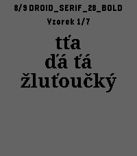
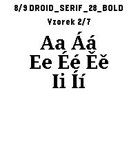
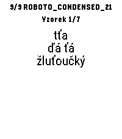
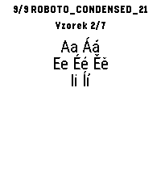

DROID_SERIF_28_BOLD

DROID_SERIF_28_BOLD-accents

ROBOTO_CONDENSED_21

ROBOTO_CONDENSED_21-accents

Skutečné snímky Font Testu. Oba fonty vznikly při sestavení firmware z projektových TTF s doplněnými 19 českými znaky. Pravá šipka přepíná font, horní a dolní vzorky. Droid Serif je 8/9, Roboto 9/9.



